¿Quién es Margarita?
Su nombre significa "medicina" en swahili, en broma por su supuesto poder curativo para las resacas. Se popularizó en el famoso restaurante Carnivore de Nairobi, donde se prepara tradicionalmente machacando la lima y la miel con un mazo de madera especial.
RECETA
- 50 ml tequila blanco
- 25 ml jugo de lima
- 20 ml triple sec
- Hielo
- Rebanada de limón
- Escarcha el borde del vaso con jugo de lima y sal.
- Agrega el tequila, jugo de lima, triple sec y hielo a una coctelera.
- Agita bien y cuela en el vaso con hielo.
- Decora con una rebanada de limón
Vaso: Old fashioned / vaso bajo